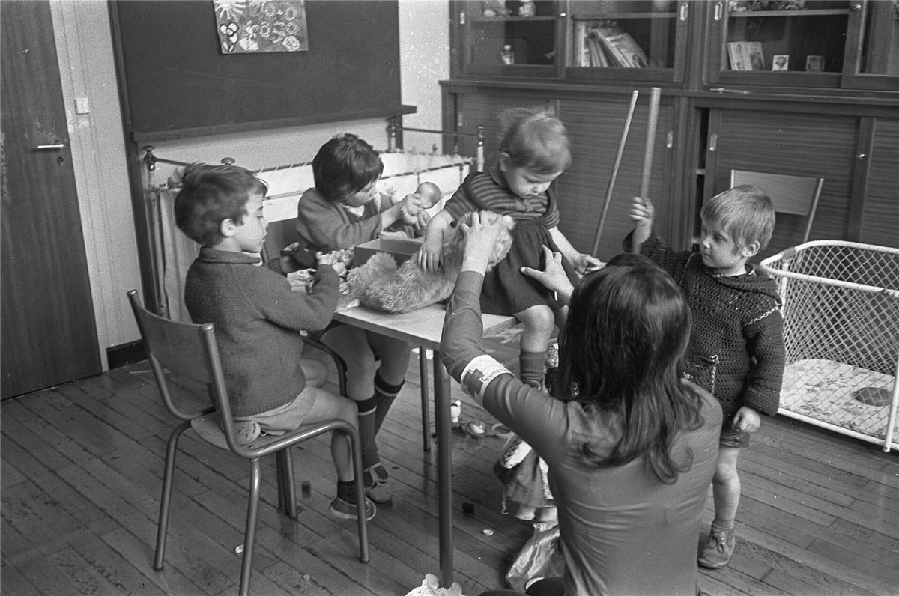
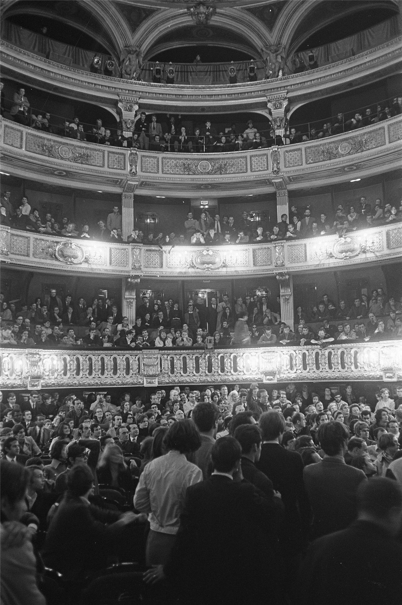
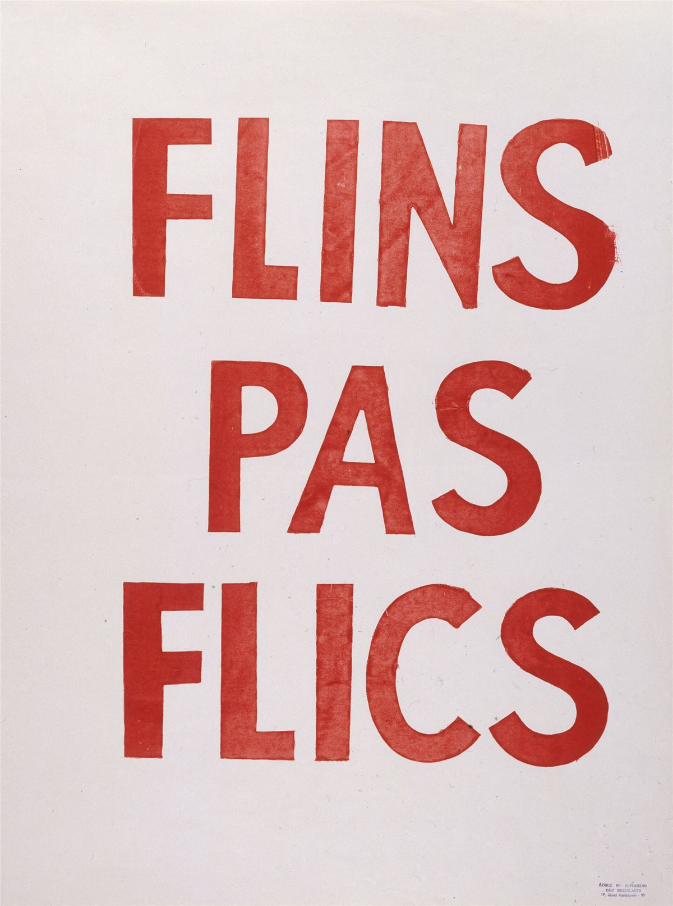

Ce qui a le plus marqué Mamie, ce ne sont pas les barricades. C'est d'avoir vu des gens qui ne s'étaient jamais parlé, ouvriers, étudiantes, employées de bureau, vieux anars, se retrouver dans des salles pleines à minuit pour décider ensemble de ce qu'on fait demain. Voici comment ça s'organisait.
La parole libérée : Sorbonne et Odéon
La Sorbonne occupée devient une assemblée générale permanente, ouverte jour et nuit à qui veut. On y vote, on y discute de tout : l'examen, la grève, la révolution, l'amour libre. Des commissions s'occupent de la nourriture, du nettoyage, de l'infirmerie, de la presse. On y trouve même une crèche pour les enfants des militantes et militants.

Le 15 mai, le théâtre de l'Odéon est occupé à son tour. Il devient un forum où, des semaines durant, des milliers de personnes se succèdent au micro. Un drapeau rouge et un drapeau noir flottent sur sa façade.

Les comités d'action
Dans les quartiers, les facs, les lycées, les entreprises, naissent des comités d'action : quelques dizaines de personnes qui se réunissent, sans adhésion ni carte, pour agir là où elles vivent. On en compte plusieurs centaines dans la région parisienne. Ils tirent des tracts, organisent le ravitaillement des grévistes, font le lien entre étudiants et ouvriers, tiennent des permanences. C'est la forme la plus libertaire du mouvement : petite, locale, autonome, fédérée par des coordinations sans chefs.
Les usines occupées
Dans les usines, les grévistes dorment sur place, organisent des piquets, des tours de garde, des cantines, des bals. Mais l'occupation reste souvent sous le contrôle des syndicats, et surtout de la CGT, qui ferme les portes aux étudiants, de peur de la « contagion gauchiste ». Dans la plupart des usines, la production est simplement arrêtée : on occupe, mais on ne fait pas tourner les machines pour soi.
Quelques endroits vont plus loin et posent la question : et si on produisait nous-mêmes ? La question reviendra quelques années plus tard, chez Lip, à Besançon.
Nantes : la ville aux mains des grévistes
À Nantes, là où tout a commencé, la grève va le plus loin. Les syndicats ouvriers, les organisations paysannes et les étudiants forment fin mai un comité central de grève qui s'installe à la mairie. Il délivre les bons d'essence, organise avec les paysans la vente directe des produits à prix coûtant, contrôle les prix dans les magasins. Certains parlent de « Commune de Nantes ». Dans le département, l'union départementale Force ouvrière est dirigée par un anarcho-syndicaliste, Alexandre Hébert, dont les liens avec les étudiants ont compté dans le départ de la grève à Sud-Aviation.
L'Atelier populaire des Beaux-Arts
Mi-mai, les élèves de l'École des beaux-arts de Paris occupent leurs ateliers et les transforment en Atelier populaire. Chaque jour, une assemblée générale discute des slogans et vote les projets d'affiches : pas de signature, pas d'artiste vedette, l'affiche appartient au mouvement. On les imprime d'abord en lithographie, puis en sérigraphie, plus rapide : des centaines d'exemplaires par jour, collés la nuit même dans tout Paris. « La chienlit, c'est lui », « Sois jeune et tais-toi », « La beauté est dans la rue » : ces affiches sont restées le visage de Mai 68.

Tu veux faire pareil ? Les fiches La sérigraphie à la maison et Coller des affiches sont faites pour ça.
À retenir
- Mai 68 s'est organisé dans des assemblées ouvertes et des comités autonomes, pas dans des partis.
- Là où la grève est allée le plus loin, comme à Nantes, elle a commencé à gérer la vie quotidienne.
- Suite : Grenelle, la CGT et les leçons libertaires.
Sources et pour aller plus loin
Lire
- 1968. De grands soirs en petits matins, Ludivine Bantigny, Seuil, 2018.Les comités d'action, les usines et Nantes, à partir des archives.
- Tenir une AG qui ne tourne pas en rondCe que les assemblées de 68 ont appris aux suivantes.
Sur le web
- L'Atelier populaireL'École des beaux-arts transformée en imprimerie du mouvement.
- Alexandre HébertL'anarcho-syndicaliste à la tête de FO en Loire-Atlantique.
Dossier rédigé par la bande à Mamie à partir de travaux d'historiennes et d'historiens et de textes des mouvements concernés. Libre de reproduction.